Workstations
Tras descargar e instalar los sistemas en VMWARE los configuramos para añadirlos a la red del dominio
Cambiamos el nombre de las maquinas:
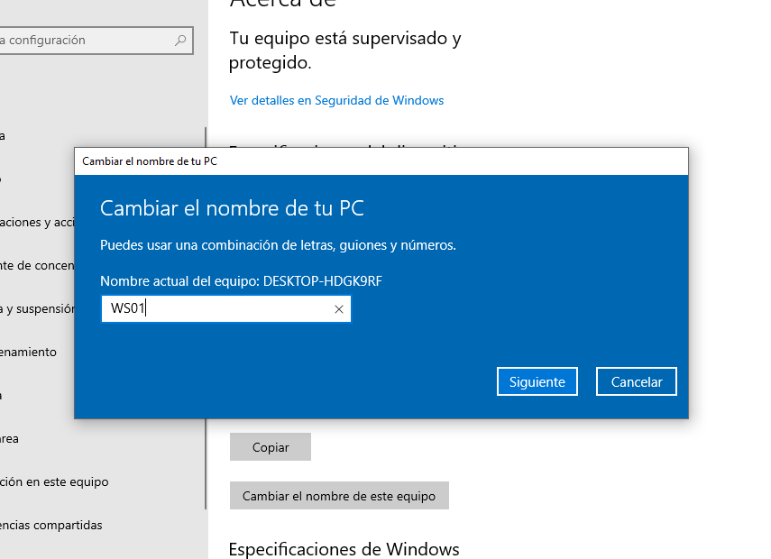
Para continuar vamos a meter ambas máquinas en la misma subred para poder agregarlas al dominio
Y como vemos para eso simplemente en VMWARE seleccionamos la misma red virtual en la que se encuentra el DC y los añadimos. Para comprobar que están conectadas simplemente hacemos un ipconfig en cmd
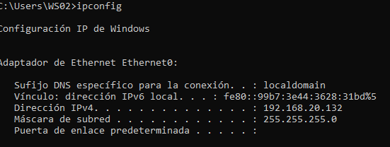
Vemos que se les ha asignado una IP en nuestra subred del DC
Ahora lo que queremos hacer es cambiar el controlador DNS por defecto para que sea el DC el que actue como DNS para ambas máquinas para así poder referirnos a nuestro DC por su nombre DC01.corp.local y no por su
IP.
Esto es posible ya que el DC puede actuar como servidor DNS y asociar las direcciones IP dentro de la subred a su nombre de dominio
.
Lo configuramos en ambas máquinas
:
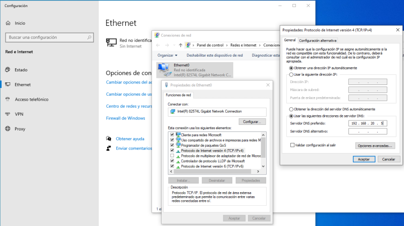
Activamos también la detección y el uso compartido en red
:
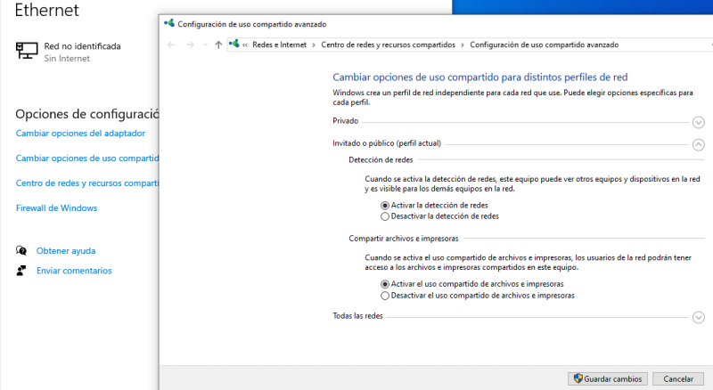
Hecho esto vamos al DC, nuestra maquina de Windows Server y vamos a crear un usuario para cada máquina de forma que con ellos puedan hacer uso del dominio
.
Para esto vamos a hacer lo siguiente:
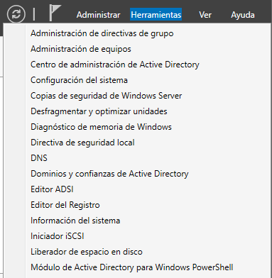
Centro de administración
.
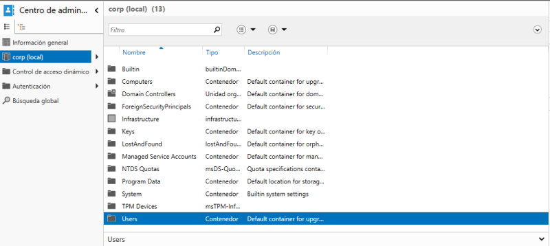
Por defecto se crean algunos usuarios además del administrador del dominio que creamos al promover este servidor como DC.
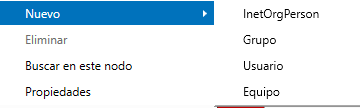
En este caso lo más importante a cambiar son los nombres de usuario e indicar que la contraseña nunca expire
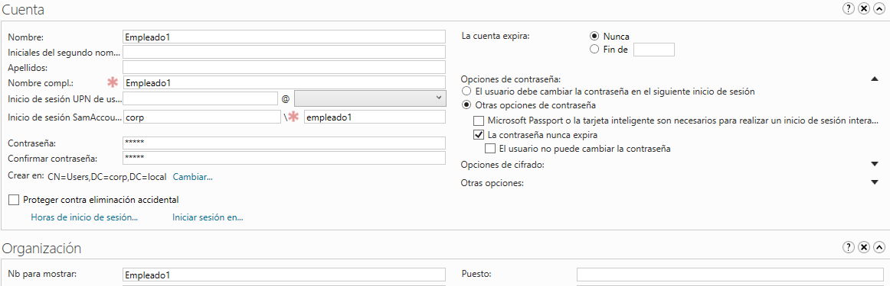
Creamos otro más
.
Conectamos las maquinas de los usuarios:
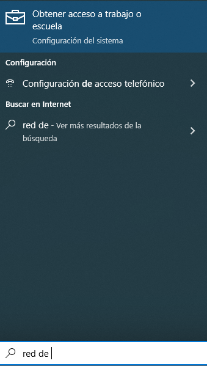
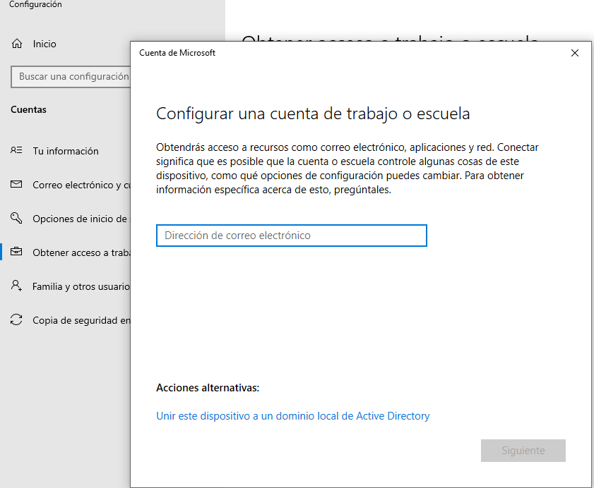
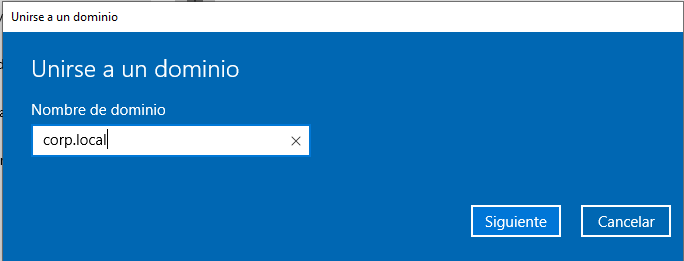
Si indica un error de dominio significa que el servidor no está visible en la red así que vamos al mismo y en opciones de red debemos activar la detección de redes y uso compartido.
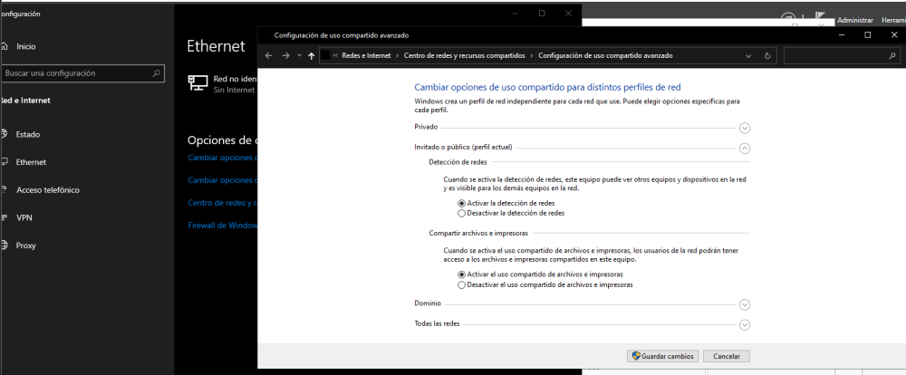
Ahora si vamos a iniciar sesion en el dominio con el usuario de la WS01
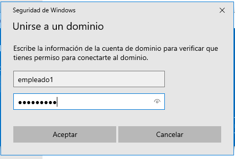
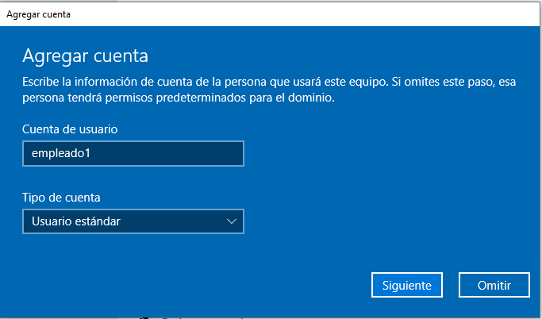
Hacemos lo mismo con la WS02
.
Cuando se reinicia la maquina vemos que el usuario de autenticación ha cambiado y no se realiza contra la verificación del equipo local sino con la verificación del Domain Controller.
Como apunte adicional, todos los datos de configuración como permisos, usuarios, etc se almacenan por defecto (si no se cambio en la configuración del AD DC en C:/windows/NTDS/ntds.dit
.
Además de esto hay otros archivos donde también se guardan datos como transacciones en un archivo llamado “edb0000" que guarda las transacciones que se realicen con el DataCenter de ese dominio.